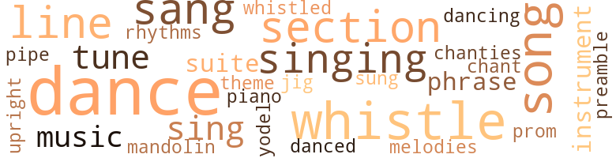
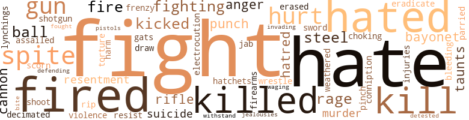

Main Stem (The), by Edge, William (1927)
98 music-related terms matched in this text.
Most frequent terms in this topic: dance (11); whistle (10); section (7); dances (7); sang (7)
chant.n.01
Definition: a repetitive song in which as many syllables as necessary are assigned to a single tone
| word | sentence |
|---|---|
| chant | I remember one of them who wailed , over and over , a tuneless chant , of which this is the expurgated edition : " ' Twas the goddam wiskey , An ' a gay young laydee , Made a goddam monkey Outa me . " |
chantey.n.01
Definition: a rhythmical work song originally sung by sailors
| word | sentence |
|---|---|
| chanties | Concerning this , Slim said : " I have heard of sailor 's chanties - songs of cooperation when weighing anchor or hoisting halyards , or whatever they hoist ; but I 've never seen anything like this . " |
dance.n.01
Definition: an artistic form of nonverbal communication
| word | sentence |
|---|---|
| dance | Our dance was easy , pleasant . |
| dances | I had heard that in Sayresville , a nearby town , dances were being held where the girls of our plant went to be kissed , hugged and demoralized . |
| dance | Now , how shall I ask one of these girls for a dance ? |
| dance | Or , " May I have this dance ? " |
| dance | I meant to say something flippant , but these words came : " May I have the honor of this dance ? " |
| dance | " Come on out and have an ice-cream sundae with me after this dance . " |
| dance | The dance was over . |
| dances | Her ole man sez they 's too many roughnecks at these dances . " |
| dances | " Wen she dances , she sticks so close to you that yer oughta wear a , jockey strap to look respec ' able . " |
| dance | I had not essayed a dance for an hour , had spoken only to the electrician 's helper . |
| dances | I had heard stories about these dances ! |
| dance | As the dance wore on couples left the dance hall to go to a confectionery nearby . |
| dance | Some returned immediately to the dance . |
| dance | At the end of the dance we went to the interurban trolley stop . |
| dances | Never go to any of these damn ' dances again . " |
| dance | She stuck as close to me as wall paper during the dance . |
| dances | " I have spent most of my money , what with dances and ' regular ' clothes . |
| dances | He had an almost psychopathic hatred of men and women who dressed well ; he ridiculed formalities and courtesies of every sort ; he had a Puritan contempt for the innocent parties and dances of middle-class youngsters . |
dance.v.02
Definition: move in a pattern; usually to musical accompaniment; do or perform a dance
| word | sentence |
|---|---|
| dancing | Two workers whom I knew by sight were dancing in a disgustingly homosexual manner . |
dance.v.03
Definition: skip, leap, or move up and down or sideways
| word | sentence |
|---|---|
| danced | I danced the remainder of the evening with Charlotte and Kitty . |
jig.n.01
Definition: music in three-four time for dancing a jig
| word | sentence |
|---|---|
| jig | One of the older men showed me how to untwist a saw , how to mount it , how to saw , and how to Use a jig . |
mandolin.n.01
Definition: a stringed instrument related to the lute, usually played with a plectrum
| word | sentence |
|---|---|
| mandolin | On a borrowed mandolin we played the latest tunes we had heard at the dance hall , childish melodies printed on miniature sheets to save paper to blow up the Germans . |
music.n.01
Definition: an artistic form of auditory communication incorporating instrumental or vocal tones in a structured and continuous manner
| word | sentence |
|---|---|
| music | We could have kept time to music as we lifted the box from the conveyor , wiggle-waggled it for a moment like a golfer about to drive . |
| music | She was singing softly with the music . |
| music | We walked behind the scenes through music , warmth , and light , meeting two or three half-dressed girls who seemed to be thinking about something far away . |
musical_instrument.n.01
Definition: any of various devices or contrivances that can be used to produce musical tones or sounds
| word | sentence |
|---|---|
| instrument | " A shovel is a hell of a dangerous instrument if properly handled . |
| instruments | Every third or fourth block they would stop , re-assemble their musical instruments , strike up a tune , and yodel their hosannahs at the wretched walls . |
phrase.n.02
Definition: a short musical passage
| word | sentence |
|---|---|
| phrase | This phrase amused a number of the workers , and soon the expression , " Do n't raise down mit de iron " was taken up mockingly by three or four youths . |
| phrase | " All right , let 's go , " I said , planning to repeat to him Slim 's phrase to me when he was in a better humor : " Even in the movies a seduced heroine does n't make so much fuss over her devirginization as you made over a few bedbugs . " |
piano.n.01
Definition: a keyboard instrument that is played by depressing keys that cause hammers to strike tuned strings and produce sounds
| word | sentence |
|---|---|
| piano | The hard tones of a mechanical piano were scarcely heard above the singing , hollering , and argument of our fellow-workers . |
pipe.n.04
Definition: a tubular wind instrument
| word | sentence |
|---|---|
| pipe | At the bottom a pipe ran through it with a valve showing . |
preamble.n.01
Definition: a preliminary introduction to a statute or constitution (usually explaining its purpose)
| word | sentence |
|---|---|
| Preamble | An open copy of Daniel de Leon 's Preamble of the Industrial Workers of the World was in his lap . |
promenade.n.01
Definition: a formal ball held for a school class toward the end of the academic year
| word | sentence |
|---|---|
| prom | I said in my best junior prom style . |
rhythm.n.04
Definition: the arrangement of spoken words alternating stressed and unstressed elements
| word | sentence |
|---|---|
| rhythms | By practice we had discovered each other 's rhythms . |
section.n.01
Definition: a self-contained part of a larger composition (written or musical)
| word | sentence |
|---|---|
| section | Although it was in a cheap section the comfort of the house , especially the plumbing in each room , made it as desirable as many rooms in expensive neighborhoods . |
| section | Both of these magazines have a section in the rear devoted to those who disappear without a trace . |
| section | Here are some excepts from this section : Zookie , Agnes . |
| section | In a few minutes we were in the employment agency section . |
| section | During this time he corresponded with many women who advertised in the matrimonial section of one of the newspapers . |
| section | Many negroes lived in this section . |
| section | With our regular clothes on underneath and our overalls on top , we went down to the employment agency section , where we separated . |
sing.v.02
Definition: produce tones with the voice
| word | sentence |
|---|---|
| sing | He would sing in a monotonous voice , screaming when it came time to pull . |
| sung | But some day , when the carmagnole is being sung , when the red army is taking possession of industry , I 'll have my men put you up against a brick wall and pump your damn ' carcass full of lead . " |
| sang | " Dere 's no-o place like home , " one of them sang . |
| sing | Perhaps I was interested in him because of the snatches of song that I used to hear him sing . |
| sing | Between the thuds of heavy boxes and the screech of unoiled conveyor rollers , I would hear these fragments : " The canary do n't sing , And the door-bell do n't ring , Since you stopped calling on me . " |
| sang | These two fragments he sang plaintively and sweetly . |
| sang | At other times he sang out boldly : " I met her in a bar-room , In-a little New York town , Her drawers were hangin ' down , She wore a See-more gown , I kissed her as I put A yellow tulip in her hand , ' Oh ! ' |
| singing | She was singing softly with the music . |
| sang | The Jew said he liked his cigars short because he did n't have to pull the smoke so far ; the Irishman found a peanut and sang this line : " I found a peanut , I found a peanut . " |
| sang | A girl , with more energy than grace and a voice more loud than sweet , came out and sang K-K-Katy . |
| sang | She sang and jumped and jumped and sang through the popular song . |
| sang | She sang and jumped and jumped and sang through the popular song . |
| sing | The whole staff of employees of the Terminal Company turned out to parade the streets , to sing war songs , to get drunk . |
singing.n.01
Definition: the act of singing vocal music
| word | sentence |
|---|---|
| singing | The next day we wandered about Baltimore , read the inscriptions on the monuments , listened to some darkies singing as they loafed on the waterfront : Ah wen ' tuh a gypsy Tuh have mah fohtshun tole , De gypsy stole , Mah sweet jelly roll . |
| singing | The hard tones of a mechanical piano were scarcely heard above the singing , hollering , and argument of our fellow-workers . |
| singing | A singing worker is not a common phenomenon . |
| singing | Charlie very soon made it quite clear that he purposed to go West with me and with Slim , whose praises I was daily singing . |
| singing | The singing of ventilation fans could be heard . |
song.n.01
Definition: a short musical composition with words
| word | sentence |
|---|---|
| songs | Concerning this , Slim said : " I have heard of sailor 's chanties - songs of cooperation when weighing anchor or hoisting halyards , or whatever they hoist ; but I 've never seen anything like this . " |
| song | Perhaps I was interested in him because of the snatches of song that I used to hear him sing . |
| song | An ' ye know dat ole song : 'T was a goddam whiskey An ' a gay young laydee , Made a goddam monkey Outa me . ' |
| song | Pull up your belt a couple notches , for tomorrow . . . " " Yes , and what 's that wobbly song you taught me ? |
| song | During her song she rushed from one end of the stage to the other , and retired breathless . |
| song | She sang and jumped and jumped and sang through the popular song . |
| songs | Why were some good songs popular and others not ? |
| song | By the way , I 've learned a song from a stiff in Pittsburgh that disposes of your argument , or any old argument . |
| songs | The whole staff of employees of the Terminal Company turned out to parade the streets , to sing war songs , to get drunk . |
suite.n.01
Definition: a musical composition of several movements only loosely connected
| word | sentence |
|---|---|
| suite | " My private suite is up dere on de secon ' tier . " |
| suite | The saloonkeeper 's private suite was as romantic and unexpected as a secret passageway . |
theme.n.03
Definition: (music) melodic subject of a musical composition
| word | sentence |
|---|---|
| theme | She would take one good look at him , retire into another room , and pour out a burning sonnet with the theme : My heart burns at both ends , It will not last the night , If , Ah ! |
tune.n.01
Definition: a succession of notes forming a distinctive sequence
| word | sentence |
|---|---|
| line | Soon a line began to form behind me . |
| line | We , who were in line , could see him talking to a friend , lighting a cigarette , looking over some papers , answering a telephone call , and making another . |
| line | One negro in line said : " Wish dat man would hurry . " |
| line | I argued with him , told him I was entitled to my wages , had earned them , had come earliest , and was therefore privileged to be first in line . |
| lines | His face , with its deep lines , emphasized by a prominent jaw , made him look like a hard-boiled top-sergeant in civvies - tough and warlike , but with a capacity for tenderness and deep feeling . |
| tune | An ' I stay in a gutter until some bull comes along an ' plays a tune on my soles nex ' morning ' . |
| tunes | On a borrowed mandolin we played the latest tunes we had heard at the dance hall , childish melodies printed on miniature sheets to save paper to blow up the Germans . |
| melodies | On a borrowed mandolin we played the latest tunes we had heard at the dance hall , childish melodies printed on miniature sheets to save paper to blow up the Germans . |
| tune | Every third or fourth block they would stop , re-assemble their musical instruments , strike up a tune , and yodel their hosannahs at the wretched walls . |
| line | The Jew said he liked his cigars short because he did n't have to pull the smoke so far ; the Irishman found a peanut and sang this line : " I found a peanut , I found a peanut . " |
| tune | I hope you recognize the tune as Auld Lang Syne . " |
| line | Then we stood in line . |
upright.n.02
Definition: a piano with a vertical sounding board
| word | sentence |
|---|---|
| upright | We finally decided on the large , narrow box , open at both ends , standing upright , and lining the hole . |
whistle.v.01
Definition: make whistling sounds
| word | sentence |
|---|---|
| whistle | A whistle soon blew for quitting time . |
| whistle | About three minutes before the whistle blew an exodus could be seen taking place . |
| whistle | When the whistle blew , we all trooped in , were searched by the guards , as we were always searched when we entered the plant . |
| whistle | The whistle blew ; we punched our time clocks as we went out , and headed straight for the mess hall in the camp . |
| whistle | A whistle ended the debate . |
| whistle | A moment later the whistle blew . |
| whistle | When the last whistle blew , the foreman called to us . |
| whistled | The work train whistled . |
| whistle | The final whistle had not yet blown . |
| whistle | Later in the day when the whistle for the first dinner hour blew , we walked out to a little restaurant across the street . |
| whistle | Soon Paddy arrived ; and a moment later the whistle blew . |
yodel.v.01
Definition: sing by changing register; sing by yodeling
| word | sentence |
|---|---|
| yodel | Every third or fourth block they would stop , re-assemble their musical instruments , strike up a tune , and yodel their hosannahs at the wretched walls . |
139 violence-related terms matched in this text.
Most frequent terms in this topic: fight (12); hate (11); fired (8); hated (7); spite (5)
anger.n.01
Definition: a strong emotion; a feeling that is oriented toward some real or supposed grievance
| word | sentence |
|---|---|
| anger | As Slim 's anger abated , his hunger increased . |
| anger | My anger was cooled by the thought that perhaps such a scurvy clerk would refuse to give me Slim 's pay . |
attack.v.01
Definition: launch an attack or assault on; begin hostilities or start warfare with
| word | sentence |
|---|---|
| assailed | The odor assailed my nostrils . |
bayonet.n.01
Definition: a knife that can be fixed to the end of a rifle and used as a weapon
| word | sentence |
|---|---|
| bayonet | It should be used like a bayonet , not like a flail . |
| bayonets | Soldiers with guns , bayonets , knapsacks and sweethearts , were going to the trains or coming in . |
bleeding.n.01
Definition: the flow of blood from a ruptured blood vessel
| word | sentence |
|---|---|
| bleeding | Nearby was a dispensary , and there was a steady stream of injured workmen who went in bleeding , or limping , or on stretchers sometimes . |
cannon.n.04
Definition: heavy automatic gun fired from an airplane
| word | sentence |
|---|---|
| cannon | " Hie - thash how A Number One decksh a cannon ball ona fly . " |
| cannon | You would n't think it , but the scissorbills that you see around here , set this river afire with burning oil , and they had a ten-pounder brass cannon mounted behind a barricade of steel rails . |
contemn.v.01
Definition: look down on with disdain
| word | sentence |
|---|---|
| scorn | The department store , where I could have bought things from a disinterested clerk , more cheaply than in the small shoddy stores , seemed to me an imposing , forbidding structure , filled with rich , frowning men , and supercilious women , ready to pounce on me , to ridicule my dirty clothes , and to scorn me . |
craze.n.02
Definition: state of violent mental agitation
| word | sentence |
|---|---|
| frenzy | For an hour I worked in a frenzy , swearing at everybody , swearing if the boxes were not ready for me , swearing if the stiffs were in my way , swearing at the foreman . |
defy.v.01
Definition: resist or confront with resistance
| word | sentence |
|---|---|
| withstand | It was hard to withstand the lure of her money . |
draw.v.23
Definition: pull (a person) apart with four horses tied to his extremities, so as to execute him
| word | sentence |
|---|---|
| draw | We were only too willing to draw our pay immediately . |
electrocution.n.02
Definition: killing by electric shock
| word | sentence |
|---|---|
| electrocution | - And music lessons , and electrocution lessons , and only the Lord knows what not . " |
eliminate.v.03
Definition: kill in large numbers
| word | sentence |
|---|---|
| eradicate | But it took months to eradicate the memory of our exchange of blows . |
| decimated | Even the ranks of the girls were decimated , we noticed , when they entered the plant that morning . |
engage.v.07
Definition: carry on (wars, battles, or campaigns)
| word | sentence |
|---|---|
| waging | Migratory workers are forever waging a futile fight with respectability and a steady job . |
erase.v.01
Definition: remove from memory or existence
| word | sentence |
|---|---|
| erased | Young war-workers , with buoyant step , erased the typical clerk of past months . |
fight.n.02
Definition: the act of fighting; any contest or struggle
| word | sentence |
|---|---|
| fighting | This is a general principle of fighting . |
| fighting | The fighting was three cornered . |
fight.n.05
Definition: a boxing or wrestling match
| word | sentence |
|---|---|
| fight | His father had been killed in a fight when he was six . |
| fight | They never had had but one fight ; and after that fight they wuz better buddies than they had ever been before . |
| fight | They never had had but one fight ; and after that fight they wuz better buddies than they had ever been before . |
| fight | Address Gen. Del. " I sat down and wrote Slim a long letter , mentioning our fight of many weeks before and tendering my apologies . |
| fight | A bunch of workers crowded around us thinking we were going to have a little fight . |
| fight | Migratory workers are forever waging a futile fight with respectability and a steady job . |
| fights | They brought back stories I had heard of fights with shacks ( brakemen ) ; long , stolen , rides over the prairies and mountains . |
| fight | If I was sleepy , I could take a nap ; did n't have fo fight to keep awake , fearful lest a foreman find me asleep , or lest a moment 's dozing should cost me a finger cut off by a whirling saw , or a foot crushed by a dropping weight . |
| fight | " Work of fight , they tell you . |
| fight | " Hell , work or fight . " |
| fight | They had a real decent fight here , as good as Yakima Valley , Ludlow , or Mesaba Range . |
| Fight | Fight with dad ? |
fight.v.02
Definition: fight against or resist strongly
| word | sentence |
|---|---|
| fight | Showvel up that dirt , so yerr Oncle Sammy can fight the goddam Germans . " |
| fighting | On his fine head , and his square , fighting jaw , played shadows from the sputtering gas flame . |
| defending | I believe I ought to be valuable , with my legal training , in defending strikers who are under injunction , or radicals of any sort who are thrown into prison for exercising their right of free speech . " |
| fight | Here I am , a young man about to start life , and I am told to work or fight . |
| fought | " They fought three hundred Pinkertons , who were coming up the river in a barge . |
firearm.n.01
Definition: a portable gun
| word | sentence |
|---|---|
| firearms | All the men were asked to open their suitcases so that they might be searched for firearms and liquor . |
fit.n.01
Definition: a display of bad temper
| word | sentence |
|---|---|
| conniption | His wife , too , must have been ambitious or extravagant , for one day he told us , a little sadly , " Every time I come home at the regular quitting time , my wife gets conniption fits . |
fury.n.01
Definition: a feeling of intense anger
| word | sentence |
|---|---|
| rage | A little later that night the superintendent came in , dishevelled and trembling with rage . |
| rage | Trembling with rage I got into the shed . |
| rage | For this once he might have respected my rage and might have kept silent . |
gag.v.06
Definition: cause to retch or choke
| word | sentence |
|---|---|
| choking | The small boxes in which it came were nailed shut ; but the fine yellow powder escaped under handling , and filled the atmosphere with a bitter , choking dust . |
gat.n.01
Definition: a gangster's pistol
| word | sentence |
|---|---|
| gats | We fully expected to find it guarded by two or three huskies with ostentatiously displayed gats . |
gun.n.01
Definition: a weapon that discharges a missile at high velocity (especially from a metal tube or barrel)
| word | sentence |
|---|---|
| guns | Soldiers with guns , bayonets , knapsacks and sweethearts , were going to the trains or coming in . |
| gun | I was always a little apprehensive lest his gun go off accidentally . |
| guns | We were reading the Iron Heel . . . " In the whine of machine guns . |
| guns | In the whine of machine guns , Slim would be there ! |
harm.v.01
Definition: cause or do harm to
| word | sentence |
|---|---|
| harm | Had he made the slightest move to harm Georgia , we would have pulverized that poor henchman . |
hate.n.01
Definition: the emotion of intense dislike; a feeling of dislike so strong that it demands action
| word | sentence |
|---|---|
| hatred | Strikes are dangerous things ; they stir up hatred and , like negro lynchings , depend upon the instability of the mob mind . |
| hatred | He had an almost psychopathic hatred of men and women who dressed well ; he ridiculed formalities and courtesies of every sort ; he had a Puritan contempt for the innocent parties and dances of middle-class youngsters . |
hate.v.01
Definition: dislike intensely; feel antipathy or aversion towards
| word | sentence |
|---|---|
| hate | " I 'd hate like hell to have to batter in my own home town , " I said . |
| hated | I hated the idea of being photographed like a criminal , and scowled like a thunder cloud at the camera . |
| hate | I grew to hate his fat , his complacency , and the nasty food he served us . |
| hated | Men hated to be paired with him while unloading heavy boxes , for his lack of rythmic sense made a crushed foot imminent at every move . |
| hate | My God - how I 'd hate to be his wife ! |
| hated | He talked about his school days , when he had hated his teachers . |
| hate | " I 'd hate to make an estimate of how many illegal births and operations took place last year . |
| hate | I hate this damn ' business of being jailed in this coach . " |
| hated | I 've been thinking about it all day , but we were having such a good time playing in Pittsburgh that I hated to talk about work , and shipments , and lousey camps , and the slave market . " |
| hate | I hate to ask him . |
| hate | And this job is so easy and pays so well , that I hate to give it up until you are ready for the next - leg of our ' Western journey . " |
| hate | I hate to sponge on Jimmy . |
| hated | Well-dressed men and women - I had hated them - but it had been good to see them again . |
| hate | I had come to hate the middle class , and if they had dollars to spare , I saw no reason why I should not share them . |
| hate | " It may be so , for all I know , But it sounds so very queer , I hate like hell to doubt your word , But your bull ------ , wo n't go here . |
| detested | And I detested the words . |
| hated | I hated so to spend my money , that I am still wearing my fall outfit . |
| hate | We hate like hell to lose you , but we ca n't take a half-sick man along . |
| hated | Others said they had not been late for a year , and they hated to break their records . |
injury.n.01
Definition: any physical damage to the body caused by violence or accident or fracture etc.
| word | sentence |
|---|---|
| injuries | When Jack was released , he learned that Shorty had died of his injuries . |
| hurt | Charlie had gone home about an hour before because of a hurt finger . |
invade.v.01
Definition: march aggressively into another's territory by military force for the purposes of conquest and occupation
| word | sentence |
|---|---|
| invading | The result to be attained by the employer was that workers would stay on the job instead of roaming the red light district of Baltimore , or invading the Heifers ' Den . |
jab.n.02
Definition: a quick short straight punch
| word | sentence |
|---|---|
| jab | A whole row of teeth can be knocked out by one short , quick jab to the mouth . " |
jealousy.n.01
Definition: a feeling of jealous envy (especially of a rival)
| word | sentence |
|---|---|
| jealousies | There are no professional jealousies . |
kick_back.v.02
Definition: spring back, as from a forceful thrust
| word | sentence |
|---|---|
| kicked | Bet they kicked him out . |
| kicked | " The shack kicked me off when I was ridin ' the Katy . " |
| kicked | They did not allow themselves to kicked about from job to job . |
kill.v.10
Definition: cause the death of, without intention
| word | sentence |
|---|---|
| killed | When we learned , about a month later , that Caproni had been killed , he felt very sorry . |
| killed | His father had been killed in a fight when he was six . |
| kill | After about fifteen minutes of wild swinging , the foreman came towards us and said : " You fellers will kill each other , swingin ' them damn ' sledges . |
| Killed | Killed himself last week . " |
| kill | Hell , I 'd as leave kill a man as look at ' im . " |
| kill | He accused them of putting tacks in oats to kill horses . |
| kill | My greatest regret on leaving is that I did not kill that fat , belly-robbing concessionaire . " |
| kill | Before I send to France any shells that may kill my own brothers , I 'll beat you up , or Mr. Evanson , or any other goddam son of a profiteering son of a ---------------- . |
| killed | That reminds me of the man that the croakuses ( doctors ) killed over at the Thor Company . |
| killed | Lots of people get killed in wars . |
lynching.n.01
Definition: putting a person to death by mob action without due process of law
| word | sentence |
|---|---|
| lynchings | Strikes are dangerous things ; they stir up hatred and , like negro lynchings , depend upon the instability of the mob mind . |
malice.n.01
Definition: feeling a need to see others suffer
| word | sentence |
|---|---|
| spite | He was never found drunk in spite of the rumors that he had a thousand dollars in his sock - - or somewhere . |
| spite | In spite of all the bitter attacks by you people on reformers , I cleave , I think , to the reformers ' position . " |
| spite | In spite of this , Slim and I met , a few years later , a super-tramp who consulted the telephone directory . |
| spite | Steak , spinach , bread , butter , potatoes , lettuce , olive oil , lemons , - all these were turned into a meal which , * in spite of our artless cooking , was immeasurably superior to the adulterated fare of cafeterias and camps . |
| spite | In spite of everything , however , I was better than anybody in the school - the teachers , the pupils , the principal . |
murder.n.01
Definition: unlawful premeditated killing of a human being by a human being
| word | sentence |
|---|---|
| murder | But when you got away from the camp you could get drunk or rape women , or perform murder . |
| murder | While we passed he acted as if he were about to be attacked ; he wheeled on his imaginary antagonist , whipped his razor from its cloth scabbard , and performed murder . |
musket_ball.n.01
Definition: a solid projectile that is shot by a musket
| word | sentence |
|---|---|
| balls | Ten hungry workers scrambled after the golden balls as they rolled on the wharf floor . |
| ball | " Hie - thash how A Number One decksh a cannon ball ona fly . " |
| ball | They willingly gave it because I could run the hundred in ten and a fifth , and I could average seven or eight yards every time I carried the ball . |
open_fire.v.01
Definition: start firing a weapon
| word | sentence |
|---|---|
| fire | We went to the foreman and asked him to fire us in order that we might get our pay immediately . |
| fired | If we quit , instead of being fired , we would have to wait a week , - until the next , regular pay day . |
| fired | The trick of getting fired in order to receive pay was demoralizing the office force . |
| fired | The foreman , who could refuse us nothing , had obligingly fired us . |
| fired | We were fired . |
| fired | " I 'm fired . " |
| fired | " Get yourself fired as soon as possible . |
| fire | He 'll have to fire me if I do n't work . " |
| fire | " You 've got to have a large body of workers in reserve - to hire quickly when orders come in , to fire quickly when orders are filled . |
| fired | Provided , of course , that the man is not fired . |
| fired | " My imagination has not ' been fired by the great drama of the war . |
pain.v.02
Definition: cause emotional anguish or make miserable
| word | sentence |
|---|---|
| hurt | The words hurt me . |
| hurt | " Well , I guess he was n't hurt so bad , after all . |
| hurt | It all hurt my pride . |
parry.v.01
Definition: impede the movement of (an opponent or a ball)
| word | sentence |
|---|---|
| parried | He parried and punched back . |
pinch.n.02
Definition: an injury resulting from getting some body part squeezed
| word | sentence |
|---|---|
| pinch | I thought that , in a pinch , I might be able to get some help by appealing to Captain Brown , who still held my camera . |
pistol.n.01
Definition: a firearm that is held and fired with one hand
| word | sentence |
|---|---|
| pistols | A little further along on this same walk we came upon a gang of young hoodlums , all armed with toy pistols . |
punch.n.01
Definition: (boxing) a blow with the fist
| word | sentence |
|---|---|
| punch | If I could only land one good , hard punch in that fat belly of his . |
| punch | I aimed a punch straight at Slim 's jaw . |
resentment.n.01
Definition: a feeling of deep and bitter anger and ill-will
| word | sentence |
|---|---|
| resentment | Added to this feeling was the resentment I harbored at being so closely guarded . |
| resentment | It was through him that my general resentment against society became crystallized into the socialist philosophy . |
resist.v.04
Definition: withstand the force of something
| word | sentence |
|---|---|
| resist | I could not resist asking him if he knew why I had been given the razzberry . |
rifle.n.01
Definition: a shoulder firearm with a long barrel and a rifled bore
| word | sentence |
|---|---|
| rifle | With bowed head he blew warm air noisily into his chilled hands , as his right arm encircled the ordered rifle . |
| rifles | We were flanked by a dozen soldiers with loaded rifles . |
rip.v.04
Definition: criticize or abuse strongly and violently
| word | sentence |
|---|---|
| rip | " Watch out you do n't rip that . |
shoot.v.02
Definition: kill by firing a missile
| word | sentence |
|---|---|
| Shoot | Shoot ' er in , now . |
shotgun.n.01
Definition: firearm that is a double-barreled smoothbore shoulder weapon for firing shot at short ranges
| word | sentence |
|---|---|
| shotgun | He had the blank look of a moron , and carried a double barreled shotgun instead of a revolver . |
sting.n.03
Definition: a painful wound caused by the thrust of an insect's stinger into skin
| word | sentence |
|---|---|
| bite | These I quietly took out of my pocket and began to chew , offering Slim a bite . |
suicide.n.01
Definition: the act of killing yourself
| word | sentence |
|---|---|
| suicide | You 're going to tell me about the sad fate of the brothers Gracchi , who committed suicide in a grove of the Furies , because they were mere reformers instead of being revolutionists . |
| suicide | " I think I should have committed suicide had there been no alternative . |
sword.n.01
Definition: a cutting or thrusting weapon that has a long metal blade and a hilt with a hand guard
| word | sentence |
|---|---|
| sword | The Romans knew this when they adopted the heavy short sword . ' |
| steel | If Carnegie had gone to war at my age , or had gone to work in a steel mill , do think he would have had the leisure or the intelligence to rob people of all this ? " |
| steel | He waved his arms to include all the steel mills about . |
| steel | In one of those steel plants over there , they 've got a minion of capitalism who walks in a path the shape of a figure eight . |
tomahawk.n.01
Definition: weapon consisting of a fighting ax; used by North American Indians
| word | sentence |
|---|---|
| hatchets | We hauled planks to carpenters , sharpened axes and hatchets for them , helped to drive large spikes , and chopped timbers . |
torment.v.01
Definition: torment emotionally or mentally
| word | sentence |
|---|---|
| torture | Which do you think would torture him most - to send him ten dollars and subtly comment on his miserliness ; or shall we send him nothing ? " |
twit.n.02
Definition: aggravation by deriding or mocking or criticizing
| word | sentence |
|---|---|
| taunts | My customary repartee to his frequent taunts was , " Aw , go to hell ! " |
| taunts | Joe grinned with embarrassment at these taunts , but said nothing . |
violence.n.01
Definition: an act of aggression (as one against a person who resists)
| word | sentence |
|---|---|
| violence | His eyes look into the future - into a future without strikes , or the violence of capitalistic society , or starving mothers and children . |
weather.v.01
Definition: face and withstand with courage
| word | sentence |
|---|---|
| weathered | His parents had weathered their financial storm , and he was again free to wander . |
wrestle.v.01
Definition: combat to overcome an opposing tendency or force
| word | sentence |
|---|---|
| wrestle | But those big , husky , black women , in their overalls , wrestle with their load , dump it into a wheel-barrow , and then push it to a scrap heap . " |
41 religion-related terms matched in this text.
Most frequent terms in this topic: faith (6); devil (4); Jew (4); hell (3); gods (3)
chant.n.01
Definition: a repetitive song in which as many syllables as necessary are assigned to a single tone
| word | sentence |
|---|---|
| chant | I remember one of them who wailed , over and over , a tuneless chant , of which this is the expurgated edition : " ' Twas the goddam wiskey , An ' a gay young laydee , Made a goddam monkey Outa me . " |
curate.n.01
Definition: a person authorized to conduct religious worship
| word | sentence |
|---|---|
| Pastor | Rose Pastor Stokes * was there . |
| Pastor | I repeated to James the story of Rose Pastor Stokes and Johnny Crew . |
doctrine.n.01
Definition: a belief (or system of beliefs) accepted as authoritative by some group or school
| word | sentence |
|---|---|
| doctrine | We went into technicalities which have little interest except to a student of the Marxian doctrine and its interpretation by present-day adherents . |
eden.n.01
Definition: any place of complete bliss and delight and peace
| word | sentence |
|---|---|
| paradise | " Are we dead , and have we reached the proletarian paradise , or did they have a bolshevist revolution in New Jersey ? " |
| Heaven | Heaven knows so many baths must be weakening . |
fakir.n.01
Definition: a Muslim or Hindu mendicant monk who is regarded as a holy man
| word | sentence |
|---|---|
| fakir | To prevent these ignorant , lousey fools from listening to the blandishments of some labor fakir from that cock-eyed federation of labor . " |
gentile.n.03
Definition: a Christian as contrasted with a Jew
| word | sentence |
|---|---|
| goys | " Dese damn ' goys are a bunch of ganefs , Semke . |
god.n.03
Definition: a man of such superior qualities that he seems like a deity to other people
| word | sentence |
|---|---|
| gods | For those baths , let all bums thank whatever gods may be . |
| God | Then , with a twinkle in his eye , he continued : " By God , I like you all right - now . |
| gods | And by the gods , we 'll ride into Cleveland on the cushions this very night . |
| god | " I du n no , an ' I do n't give a good god damn . |
| gods | You belong either to a group which has to kneel before certain gods , conform to certain folkways , or you do not . " |
grace.n.05
Definition: (Greek mythology) one of three sisters who were the givers of beauty and charm; a favorite subject for sculptors
| word | sentence |
|---|---|
| Grace | Grace 's work was to clean the outside of shells when they came in from Number Ten . |
| Grace | " It was then I met Grace Arnold . |
hell.n.01
Definition: any place of pain and turmoil
| word | sentence |
|---|---|
| hell | Let 's work like hell and load this car . " |
| hell | " Get to hell away from here . " |
| hell | All similes had reference to hell on the unemphatic levels - hot as hell , cold as hell , pretty as hell . |
imitation.n.01
Definition: the doctrine that representations of nature or human behavior should be accurate imitations
| word | sentence |
|---|---|
| imitation | They were adolescents now , earning money enough to threaten to leave home when their parents reproved them for the purchase of imitation jet beads , silver-plated cigarette cases , five dollar neckties , fifteen-dollar shirts . |
jesus.n.01
Definition: a teacher and prophet born in Bethlehem and active in Nazareth; his life and sermons form the basis for Christianity (circa 4 BC - AD 29)
| word | sentence |
|---|---|
| Jesus | More of Slim 's malicious gossip : " I think that just a few weeks before his death , Franklin said that he had a ' cold approbation ' of the moral system of Jesus of Nazareth . |
| Jesus | It was so damn ' cold and everybody was so damn ' hostyle , I had to go to Jesus Christ for a flop " ( he had slept in a mission , or at the Salvation Army ) . |
jew.n.01
Definition: a person belonging to the worldwide group claiming descent from Jacob (or converted to it) and connected by cultural or religious ties
| word | sentence |
|---|---|
| Jew | She was introduced by a Jew with a fine , melodious voice , who said our dear , dear Rose was back with us again . |
| Israelite | Once , as we were returning to the car for a load , Slim winked to me and made a motion that we lower the iron , until the Israelite , fearful lest the iron drop on his toes , should take his part of the load . |
| Jew | The Irishman and the Jew were heaving their heavy jokes at each other . |
| Jew | The Jew said he liked his cigars short because he did n't have to pull the smoke so far ; the Irishman found a peanut and sang this line : " I found a peanut , I found a peanut . " |
| Jew | To which the Jew queried : " Votcha gon na do mit it ? |
messiah.n.01
Definition: any expected deliverer
| word | sentence |
|---|---|
| Christ | It was so damn ' cold and everybody was so damn ' hostyle , I had to go to Jesus Christ for a flop " ( he had slept in a mission , or at the Salvation Army ) . |
religion.n.01
Definition: a strong belief in a supernatural power or powers that control human destiny
| word | sentence |
|---|---|
| faith | The unwelcome visit we made to Johnny 's pleasant home had its humorous aspects ; but it shook Slim 's faith to learn that a man who admired Danny de Leon would not receive two disreputable looking bums with open arms . |
| faith | But they proclaimed their faith like Christian martyrs . |
| faith | To have a suitcase is evidence of good faith , for you put the suitcase on the rack above your head ( the man-catcher sees to that ) . |
| faith | One of his chief amusements was to tease , to tease me , to tease those who were not of his political faith , to tease religiously-minded persons . |
| faith | " You know , Blondey - I 've never told anybody this before - I have a sort of faith in my destiny . |
| faith | Like the alchemists who attached value to rare , picturesque or excrementary substances , the working plug has faith in nasty things to cure disease . |
saint.n.02
Definition: person of exceptional holiness
| word | sentence |
|---|---|
| angel | ' It 's funny , ' he said , ' that Michael Angelo or Leonardo - especially Leonardo - did n't have wit enough to carve an angel with tail feathers . |
| angels | Leonardo should have known that angels ca n't fly without tails . |
satan.n.01
Definition: (Judeo-Christian and Islamic religions) chief spirit of evil and adversary of God; tempter of mankind; master of Hell
| word | sentence |
|---|---|
| devil | I looked over the itemized list on the outside of the envelope ; $ 66.90 for wages , right ; $ 16.50 for meal tickets , right ; $ 1.00 for , what the devil ? |
| Devil | Or the Sea Wolf , or the Devil 's Disciple , or Don Juan , or Byron . |
| devil | One day some of the boys felt devilish and tied Pearl to a chair , and by Gosh , they nearly stripped her , and then laughed like the devil as Jimmy tickled her , while she hollered and struggled . |
| devil | worker is to beat somebody else to a job - and devil take the hindmost . |
| devil | That feeling that I was better than anybody else gave me a devil of a lot of trouble , especially when my soles were so thin that a wet sidewalk gave me wet feet . |
| Devil | I told him that after two years in Alaska one could lick old Mr. Devil himself . |